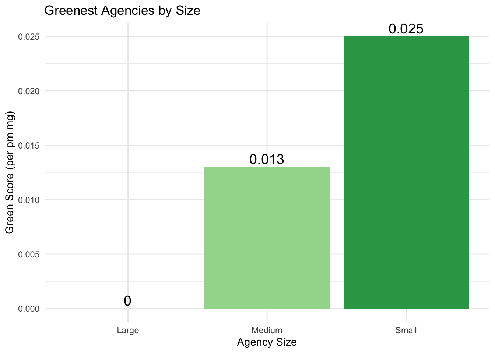
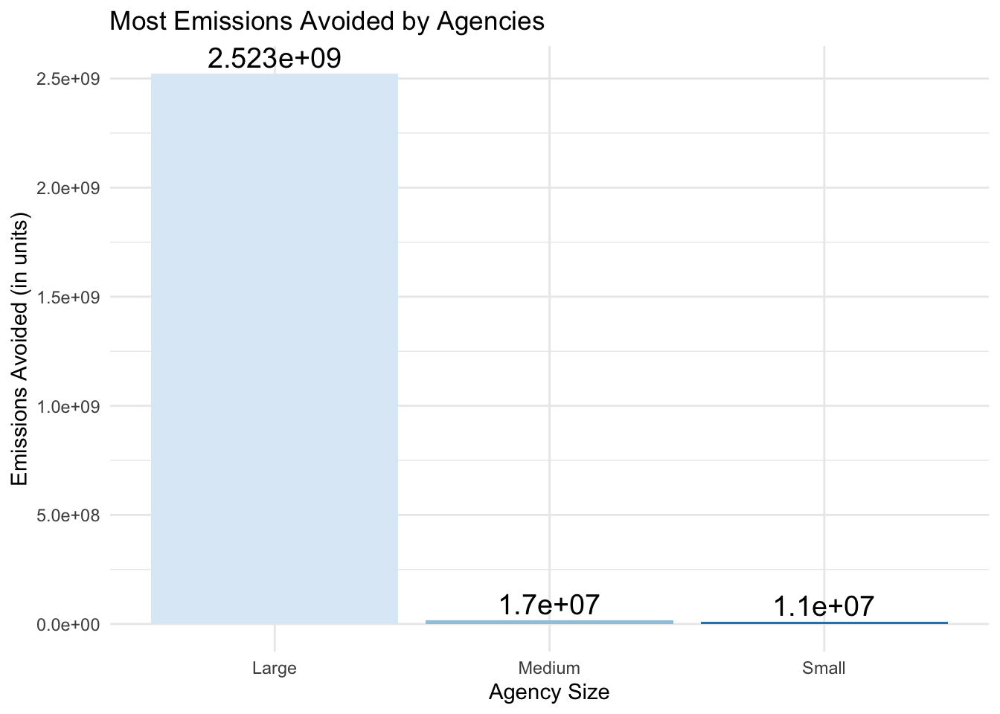

Code
ensure_package <- function(pkg){
pkg <- as.character(substitute(pkg))
options(repos = c(CRAN = "https://cloud.r-project.org"))
if(!require(pkg, character.only=TRUE)) install.packages(pkg)
stopifnot(require(pkg, character.only=TRUE))
}
ensure_package(dplyr)
ensure_package(stringr)
ensure_package(tidyr)
ensure_package(httr2)
ensure_package(rvest)
ensure_package(datasets)
ensure_package(purrr)
ensure_package(DT)
get_eia_sep <- function(state, abbr){
state_formatted <- str_to_lower(state) |> str_replace_all("\\s", "")
dir_name <- file.path("data", "mp02")
file_name <- file.path(dir_name, state_formatted)
dir.create(dir_name, showWarnings=FALSE, recursive=TRUE)
if(!file.exists(file_name)){
BASE_URL <- "https://www.eia.gov"
REQUEST <- request(BASE_URL) |>
req_url_path("electricity", "state", state_formatted)
RESPONSE <- req_perform(REQUEST)
resp_check_status(RESPONSE)
writeLines(resp_body_string(RESPONSE), file_name)
}
TABLE <- read_html(file_name) |>
html_element("table") |>
html_table() |>
mutate(Item = str_to_lower(Item))
if("U.S. rank" %in% colnames(TABLE)){
TABLE <- TABLE |> rename(Rank = `U.S. rank`)
}
CO2_MWh <- TABLE |>
filter(Item == "carbon dioxide (lbs/mwh)") |>
pull(Value) |>
str_replace_all(",", "") |>
as.numeric()
PRIMARY <- TABLE |>
filter(Item == "primary energy source") |>
pull(Rank)
RATE <- TABLE |>
filter(Item == "average retail price (cents/kwh)") |>
pull(Value) |>
as.numeric()
GENERATION_MWh <- TABLE |>
filter(Item == "net generation (megawatthours)") |>
pull(Value) |>
str_replace_all(",", "") |>
as.numeric()
data.frame(CO2_MWh = CO2_MWh,
primary_source = PRIMARY,
electricity_price_MWh = RATE * 10, # / 100 cents to dollars &
# * 1000 kWh to MWH
generation_MWh = GENERATION_MWh,
state = state,
abbreviation = abbr
)
}
EIA_SEP_REPORT <- map2(state.name, state.abb, get_eia_sep) |> list_rbind()
ensure_package(scales)
ensure_package(DT)
library(knitr)
# Which state has the most expensive retail electricity?
state_most_expensive <- EIA_SEP_REPORT |>
slice_max(electricity_price_MWh, n = 1) |>
mutate(CO2_MWh = number(CO2_MWh, big.mark=","),
electricity_price_MWh = dollar(electricity_price_MWh),
generation_MWh = number(generation_MWh, big.mark=",")) |>
rename(`Pounds of CO2 Emitted per MWh of Electricity Produced`=CO2_MWh,
`Primary Source of Electricity Generation`=primary_source,
`Average Retail Price for 1000 kWh`=electricity_price_MWh,
`Total Generation Capacity (MWh)`= generation_MWh,
State=state)
kable(state_most_expensive, caption = "State with the Most Expensive Retail Electricity")| Pounds of CO2 Emitted per MWh of Electricity Produced | Primary Source of Electricity Generation | Average Retail Price for 1000 kWh | Total Generation Capacity (MWh) | State | abbreviation |
|---|---|---|---|---|---|
| 1,444 | Petroleum | $386 | 9,194,164 | Hawaii | HI |
Code
# Which state has the ‘dirtiest’ electricity mix?
state_dirtiest <- EIA_SEP_REPORT |>
slice_max(CO2_MWh, n = 1) |>
mutate(CO2_MWh = number(CO2_MWh, big.mark=","),
electricity_price_MWh = dollar(electricity_price_MWh),
generation_MWh = number(generation_MWh, big.mark=",")) |>
rename(`Pounds of CO2 Emitted per MWh of Electricity Produced`=CO2_MWh,
`Primary Source of Electricity Generation`=primary_source,
`Average Retail Price for 1000 kWh`=electricity_price_MWh,
`Total Generation Capacity (MWh)`= generation_MWh,
State=state)
kable(state_dirtiest, caption = "State with the 'Dirtiest' Electricity Mix")| Pounds of CO2 Emitted per MWh of Electricity Produced | Primary Source of Electricity Generation | Average Retail Price for 1000 kWh | Total Generation Capacity (MWh) | State | abbreviation |
|---|---|---|---|---|---|
| 1,925 | Coal | $102.60 | 52,286,784 | West Virginia | WV |
Code
# On average, how many pounds of CO2 are emitted per MWh of electricity produced in the US?
avg_co2 <- EIA_SEP_REPORT |>
summarize(avg_co2 = sum(CO2_MWh * generation_MWh) / sum(generation_MWh)) |>
mutate(avg_co2= number(avg_co2, big.mark = ",")) |>
rename(`Average CO2 emissions per MWh`=avg_co2)
kable(avg_co2, caption = "Average CO2 Emissions per MWh in the US")| Average CO2 emissions per MWh |
|---|
| 805 |
Code
# What is the rarest primary energy source in the US?
rarest_source <- EIA_SEP_REPORT |>
group_by(primary_source) |>
summarize(Number = n()) |>
slice_min(Number, n = 1) |>
pull(primary_source)
# What is the associated cost of electricity and where is it used?
rarest <- EIA_SEP_REPORT |>
filter(primary_source==rarest_source) |>
select(primary_source, electricity_price_MWh, state) |>
mutate(electricity_price_MWh = dollar(electricity_price_MWh)) |>
rename(`Primary Source of Electricity Generation`=primary_source,
`Average Retail Price for 1000 kWh`=electricity_price_MWh,
State=state)
kable(rarest, caption ="Rarest Source and Its Cost and Location")| Primary Source of Electricity Generation | Average Retail Price for 1000 kWh | State |
|---|---|---|
| Petroleum | $386 | Hawaii |
Code
# My home state, Texas, has a reputation as being the home of “dirty fossil fuels”
# while NY has a reputation as a leader in clean energy. How many times cleaner is
# NY’s energy mix than that of Texas?
co2_ny <- EIA_SEP_REPORT |>
filter(state == "New York") |>
pull(CO2_MWh)
co2_tx <- EIA_SEP_REPORT |>
filter(state == "Texas") |>
pull(CO2_MWh)
times_cleaner <- EIA_SEP_REPORT |>
filter(state %in% c("New York","Texas")) |>
mutate(times = CO2_MWh / co2_ny) |>
select(state, primary_source, CO2_MWh, times) |>
rename(`Pounds of CO2 Emitted per MWh of Electricity Produced`=CO2_MWh,
`Primary Source of Electricity Generation`=primary_source,
`New York is Cleaner than this State with Times`=times,
State=state)
kable(times_cleaner,caption="New York is cleaner than Texas")| State | Primary Source of Electricity Generation | Pounds of CO2 Emitted per MWh of Electricity Produced | New York is Cleaner than this State with Times |
|---|---|---|---|
| New York | Natural gas | 522 | 1.000000 |
| Texas | Natural gas | 855 | 1.637931 |
Code
# 2023 ntd energy
ensure_package(readxl)
# Create 'data/mp02' directory if not already present
DATA_DIR <- file.path("data", "mp02")
dir.create(DATA_DIR, showWarnings=FALSE, recursive=TRUE)
NTD_ENERGY_FILE <- file.path(DATA_DIR, "2023_ntd_energy.xlsx")
if(!file.exists(NTD_ENERGY_FILE)){
DS <- download.file("https://www.transit.dot.gov/sites/fta.dot.gov/files/2024-10/2023%20Energy%20Consumption.xlsx",
destfile=NTD_ENERGY_FILE,
method="curl")
if(DS | (file.info(NTD_ENERGY_FILE)$size == 0)){
cat("I was unable to download the NTD Energy File. Please try again.\n")
stop("Download failed")
}
}
NTD_ENERGY_RAW <- read_xlsx(NTD_ENERGY_FILE)
# basic clean up
ensure_package(tidyr)
to_numeric_fill_0 <- function(x){
x <- if_else(x == "-", NA, x)
replace_na(as.numeric(x), 0)
}
NTD_ENERGY <- NTD_ENERGY_RAW |>
select(-c(`Reporter Type`,
`Reporting Module`,
`Other Fuel`,
`Other Fuel Description`)) |>
mutate(across(-c(`Agency Name`,
`Mode`,
`TOS`),
to_numeric_fill_0)) |>
group_by(`NTD ID`, `Mode`, `Agency Name`) |>
summarize(across(where(is.numeric), sum),
.groups = "keep") |>
mutate(ENERGY = sum(c_across(c(where(is.numeric))))) |>
filter(ENERGY > 0) |>
select(-ENERGY) |>
ungroup()
## This code needs to be modified
NTD_ENERGY <- NTD_ENERGY |>
mutate(Mode=case_when(
Mode == "AR" ~ "Alaska Railroad",
Mode == "CB" ~ "Commuter Bus",
Mode == "CC" ~ "Cable Car",
Mode == "CR" ~ "Commuter Rail",
Mode == "DR" ~ "Demand Response",
Mode == "FB" ~ "Ferryboat",
Mode == "HR" ~ "Heavy Rail",
Mode == "IP" ~ "Inclined Plane",
Mode == "LR" ~ "Light Rail",
Mode == "MB" ~ "Bus",
Mode == "MG" ~ "Monorail/Automated Guideway",
Mode == "PB" ~ "Publico",
Mode == "RB" ~ "Bus Rapid Transit",
Mode == "SR" ~ "Streetcar Rail",
Mode == "TB" ~ "Trolleybus",
Mode == "TR" ~ "Aerial Tramway",
Mode == "VP" ~ "Vanpool",
Mode == "YR" ~ "Hybrid Rail",
TRUE ~ "Unknown"))
# download the service by agency
library(readr)
NTD_SERVICE_FILE <- file.path(DATA_DIR, "2023_service.csv")
if(!file.exists(NTD_SERVICE_FILE)){
DS <- download.file("https://data.transportation.gov/resource/6y83-7vuw.csv",
destfile=NTD_SERVICE_FILE,
method="curl")
if(DS | (file.info(NTD_SERVICE_FILE)$size == 0)){
cat("I was unable to download the NTD Service File. Please try again.\n")
stop("Download failed")
}
}
NTD_SERVICE_RAW <- read_csv(NTD_SERVICE_FILE)
# clean it up
NTD_SERVICE <- NTD_SERVICE_RAW |>
mutate(`NTD ID` = as.numeric(`_5_digit_ntd_id`)) |>
rename(Agency = agency,
City = max_city,
State = max_state,
UPT = sum_unlinked_passenger_trips_upt,
MILES = sum_passenger_miles) |>
select(matches("^[A-Z]", ignore.case=FALSE)) |>
filter(MILES > 0)
# Which transit service has the most UPT annually?
most_upt <- NTD_SERVICE |>
slice_max(UPT, n=1) |>
mutate(UPT=number(UPT, big.mark=","),
MILES=number(MILES,big.mark=","))
kable(most_upt, caption="Transit Service with the Most UPT Annually")| Agency | City | State | UPT | MILES | NTD ID |
|---|---|---|---|---|---|
| MTA New York City Transit | Brooklyn | NY | 2,632,003,044 | 9,591,253,658 | 20008 |
Code
# What is the average trip length of a trip on MTA NYC?
avg_length <- NTD_SERVICE |>
filter(Agency=="MTA New York City Transit") |>
mutate(avg_length=MILES/UPT, big.mark=",") |>
select(`NTD ID`, Agency, avg_length) |>
rename(`Average Length`=avg_length)
kable(avg_length,caption="Average Length of a Trip on MTA NYC")| NTD ID | Agency | Average Length |
|---|---|---|
| 20008 | MTA New York City Transit | 3.644089 |
Code
# Which transit service in NYC has the longest average trip length?
longest_transit <- NTD_SERVICE |>
filter(City %in% c("Brooklyn", "New York", "Staten Island")) |>
mutate(avg_trip_length=MILES/UPT) |>
slice_max(avg_trip_length, n=1) |>
rename(`Average Trip Length`=avg_trip_length)
kable(longest_transit, caption="Transit Service in NYC with the longest average trip length")| Agency | City | State | UPT | MILES | NTD ID | Average Trip Length |
|---|---|---|---|---|---|---|
| MTA Long Island Rail Road | New York | NY | 83835706 | 2033685836 | 20100 | 24.25799 |
Code
# Which state has the fewest total miles travelled by public transit?
state_fewest_miles <- NTD_SERVICE |>
group_by(State) |>
summarize(total_miles=sum(MILES)) |>
slice_min(total_miles, n=1)
kable(state_fewest_miles, caption="State with the Fewest Total Miles")| State | total_miles |
|---|---|
| NH | 3749892 |
Code
# Are all states represented in this data? If no, which ones are missing? The
# state.name and state.abb objects we used above may be useful here.
missing_states <- EIA_SEP_REPORT |>
anti_join(NTD_SERVICE, join_by("abbreviation"=="State")) |>
select(state) |>
rename(`Missing States`=state)
kable(missing_states, caption="States that are not represented")| Missing States |
|---|
| Arizona |
| Arkansas |
| California |
| Colorado |
| Hawaii |
| Iowa |
| Kansas |
| Louisiana |
| Missouri |
| Montana |
| Nebraska |
| Nevada |
| New Mexico |
| North Dakota |
| Oklahoma |
| South Dakota |
| Texas |
| Utah |
| Wyoming |
Code
# join the three tables
agency_mode <- NTD_SERVICE |>
inner_join(NTD_ENERGY |>
select(-`Bunker Fuel`,-Ethanol, -Methonal,-Kerosene),
join_by(`NTD ID`==`NTD ID`)
) |>
inner_join(EIA_SEP_REPORT, join_by(State == abbreviation)) |>
select(-`Agency Name`, -State) |>
rename(
agency=Agency,
mode=Mode,
biodiesel=`Bio-Diesel`,
cnatgas=`C Natural Gas`,
diesel=`Diesel Fuel`,
ebat=`Electric Battery`,
epro=`Electric Propulsion`,
gas=Gasoline,
hy=Hydrogen,
lnatgas=`Liquified Nat Gas`,
lpetgas=`Liquified Petroleum Gas`,
co2_mwh=CO2_MWh
) |>
group_by(agency, mode)
# co2_vol_mass <- read_xlsx("data/mp02/co2_vol_mass.xlsx")
agency_mode <- agency_mode |>
mutate(total_co2_emissions=
biodiesel*22.45+
cnatgas*0.134/1000*120.85+
diesel*22.45+
ebat/1000*co2_mwh+
epro/1000*co2_mwh+
gas*20.86+
lnatgas*0.134/1000*120.85+
lpetgas*12.68
)
agency_mode2 <- agency_mode |>
select(-biodiesel,-cnatgas,-diesel,
-ebat, -epro, -gas,
-hy, -lnatgas, -lpetgas,
-co2_mwh, -primary_source, -electricity_price_MWh,
-generation_MWh
) |>
group_by(`NTD ID`) |>
mutate(tot_emissions_agency=sum(total_co2_emissions))
agency_mode3 <- agency_mode2 |>
select(`NTD ID`, agency, City,
state, UPT, MILES,
tot_emissions_agency) |>
mutate(per_upt = tot_emissions_agency/UPT,
per_passenger_mile = per_upt/MILES) |>
ungroup()
# lowest emissions per upt
lowest_emissions_upt <- agency_mode3 |>
select(`NTD ID`, agency, City,
state, per_upt) |>
slice_min(per_upt, n=1)
kable(lowest_emissions_upt, caption="Agency with the lowest co2 emissions per upt")| NTD ID | agency | City | state | per_upt |
|---|---|---|---|---|
| 23 | City of Seattle, dba: Seattle Center Monorail | Seattle | Washington | 0.0691556 |
Code
# lowest emissions per passenger mile
lowest_emi_upt_mile <- agency_mode3 |>
select(`NTD ID`, agency, City,
state, per_passenger_mile) |>
mutate(per_pm_mg=per_passenger_mile*453.592*1000) |> # CO2 emissions in miligrams
slice_min(per_pm_mg, n=1, with_ties = FALSE)
kable(lowest_emi_upt_mile, caption="Agency with the lowest emissions(miligram) per passenger mile")| NTD ID | agency | City | state | per_passenger_mile | per_pm_mg |
|---|---|---|---|---|---|
| 20008 | MTA New York City Transit | Brooklyn | New York | 0 | 2.8e-05 |
Code
# finding the values that will define small, medium, and large sized agencies.
size_1 <- quantile(agency_mode3 |> select(UPT) |> unique() |> pull(UPT), 0.1)
size_2 <- quantile(agency_mode3 |> select(UPT) |> unique() |> pull(UPT), 0.4)
size_3 <- quantile(agency_mode3 |> select(UPT) |> unique() |> pull(UPT), 0.7)
agency_mode4 <- agency_mode3 |>
filter(UPT > size_1) |>
mutate(size = case_when(
UPT <= size_2 ~ "Small",
UPT > size_2 & UPT <= size_3 ~ "Medium",
UPT > size_3 ~ "Large")) |>
mutate(per_pm_mg=per_passenger_mile*453.592*1000)
# greenest agencies with different sizes
greenest_agencies <- agency_mode4 |>
select(size, agency, City,state, per_pm_mg) |>
unique() |>
group_by(size) |>
slice_min(per_pm_mg, n=1)
kable(greenest_agencies,caption="The greenest agencies by size")| size | agency | City | state | per_pm_mg |
|---|---|---|---|---|
| Large | MTA New York City Transit | Brooklyn | New York | 0.0000280 |
| Medium | Birmingham-Jefferson County Transit Authority | Birmingham | Alabama | 0.0139570 |
| Small | City of Albany , dba: Albany Transit System | Albany | Georgia | 0.0251236 |
Code
# most emissions avioded
most_emissions_avoided <- agency_mode4 |>
unique() |>
mutate(emission_avoided=MILES/49*20.86-tot_emissions_agency) |>
group_by(size) |>
slice_max(emission_avoided,n=1) |>
select(size, agency, City, state, emission_avoided)
kable(most_emissions_avoided, caption="Agencies with the most emissions avioded")| size | agency | City | state | emission_avoided |
|---|---|---|---|---|
| Large | MTA New York City Transit | Brooklyn | New York | 2523693827 |
| Medium | Hudson Transit Lines, Inc., dba: Short Line | Mahwah | New Jersey | 17934431 |
| Small | Hampton Jitney, Inc. | Calverton | New York | 11184078 |
Code
# highest percentage of electrification
highest_electrification <- agency_mode |>
mutate(elec=ebat+epro, other=biodiesel+cnatgas+
diesel+gas+hy+lnatgas+lpetgas) |>
group_by(agency) |>
mutate(tot_elec=sum(elec), tot_other=sum(other)) |>
unique() |>
mutate(elec_level=tot_elec/tot_other)
highest_electrification_agency <- highest_electrification |>
inner_join(agency_mode4, join_by("NTD ID"=="NTD ID")) |>
group_by(size) |>
filter(elec_level!=Inf) |>
slice_max(elec_level,n=1)|>
select(size,agency.x,City.x,state.x,elec_level) |>
unique()
kable(highest_electrification_agency, caption="Agencies with the highest electrification level")| size | agency.x | City.x | state.x | elec_level |
|---|---|---|---|---|
| Large | Tri-County Metropolitan Transportation District of Oregon, dba: TriMet | Portland | Oregon | 117.43770 |
| Medium | University of Georgia, dba: Transportation and Parking Services | Athens | Georgia | 10.36036 |
| Small | Connecticut Department of Transportation | Newington | Connecticut | 14.84685 |
Code
# worst of green agency
worst_green_agency <- highest_electrification |>
inner_join(agency_mode4, join_by("NTD ID"=="NTD ID")) |>
group_by(size) |>
filter(elec_level==0) |>
slice_max(total_co2_emissions,n=1)|>
select(size,agency.x,City.x,state.x,total_co2_emissions) |>
unique()
kable(worst_green_agency, caption="Agencies that are most 'un-green'")| size | agency.x | City.x | state.x | total_co2_emissions |
|---|---|---|---|---|
| Large | Washington State Ferries | Olympia | Washington | 344220193 |
| Medium | SeaStreak, LLC | Atlantic Highlands | New Jersey | 66376478 |
| Small | Alaska Railroad Corporation | Anchorage | Alaska | 21854963 |
Code
# visualization
# Load necessary libraries
library(ggplot2)
library(dplyr)
# Example data
greenest_agencies <- data.frame(
size = c('Small', 'Medium', 'Large'),
agency = c('Agency A', 'Agency B', 'Agency C'),
City = c('City X', 'City Y', 'City Z'),
state = c('State 1', 'State 2', 'State 3'),
per_pm_mg = c(0.025, 0.013, 0.000)
)
# Create the bar plot
ggplot(greenest_agencies, aes(x = size, y = per_pm_mg, fill = size)) +
geom_bar(stat = 'identity', show.legend = FALSE) +
geom_text(aes(label = round(per_pm_mg, 3)), vjust = -0.3, size = 5) +
scale_fill_brewer(palette = "Greens") +
labs(
title = 'Greenest Agencies by Size',
x = 'Agency Size',
y = 'Green Score (per pm mg)'
) +
theme_minimal()
Code
#another vis
# Load necessary libraries
library(ggplot2)
library(dplyr)
# Here is a sample structure
most_emissions_avoided <- data.frame(
size = c('Small', 'Medium', 'Large'),
agency = c('Agency A', 'Agency B', 'Agency C'),
City = c('City X', 'City Y', 'City Z'),
state = c('State 1', 'State 2', 'State 3'),
emission_avoided = c(11000000, 17000000, 2523000000)
)
# Create a bar plot for the most emissions avoided by agency size
ggplot(most_emissions_avoided, aes(x = size, y = emission_avoided, fill = size)) +
geom_bar(stat = 'identity', show.legend = FALSE) +
geom_text(aes(label = round(emission_avoided, 0)), vjust = -0.3, size = 5) +
scale_fill_brewer(palette = "Blues") +
labs(
title = 'Most Emissions Avoided by Agencies',
x = 'Agency Size',
y = 'Emissions Avoided (in units)'
) +
theme_minimal()
Code
# Save the plot as a PNG file
ggsave("my_plot.png", plot = last_plot(), width = 8, height = 5)